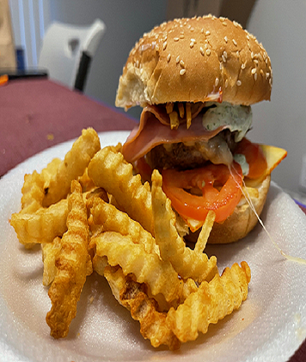

Hamburger
Ingredients
- Hamburger Bun
- 500gr Ground meat
- 200gr. Ham (slice)
- 200gr. Cheese (slice)
- 1 Egg
- Striped bread
- Tomato
- Tomato Sauce - Ketchup
- Mayonnaise
- Striped potatoes
- Salt and pepper to taste

Preparation
- In a bowl, place the ground meat, season with salt and pepper, add the egg.
- Add the breadcrumbs and mix everything together.
- Take a quantity of meat, make a ball and crush it to the desired size and thickness.
- Place a ham slide on the meat and then a cheese slide.
- Place in a pan with butter and cook on both sides.
- Place butter in another pan and toast the inside of the bread.
- Spread the bread with mayonnaise, add cheese, tomato and ketchup.
- Place the ground beef, ham and grated potatoes.
- Accompany with French fries.